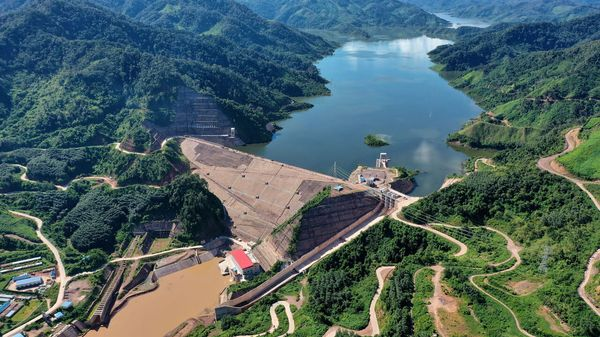
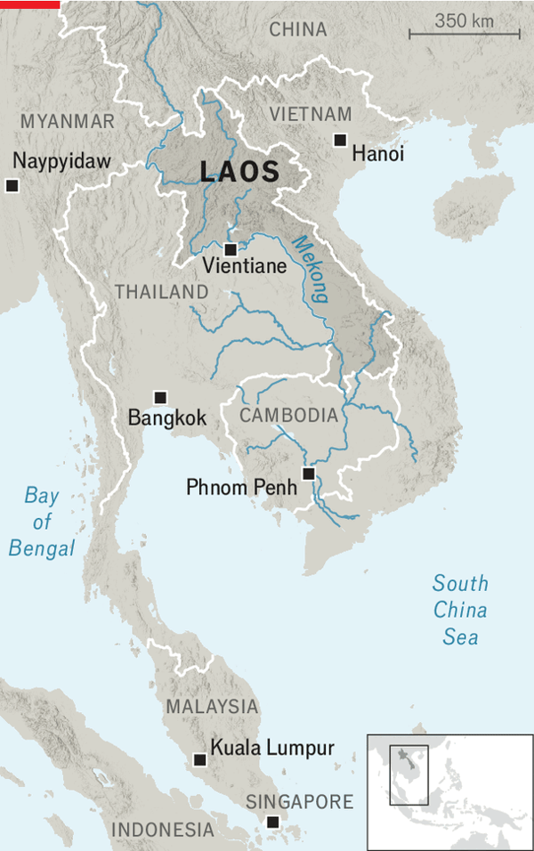

Jul 09, 2026 05:23 AM | VIENTIANE

WITH ITS large ambitions for data centres and factories, South-East Asia needs energy. Last month the International Energy Agency estimated that the region would account for a fifth of the increase in global power demand between now and 2035; only India is expected to contribute more. Yet as the war in Iran has painfully illustrated, secure supplies cannot be taken for granted. Where could the juice come from?

Laos believes that it could be part of the answer. Coming from officials belonging to a landlocked country of around 8m people and an income per person of only $2,400, that sounds audacious. But Laos is rich in one respect: water. The Mekong, South-East Asia’s longest river, and its tributaries tumble through the country’s mountains. Harnessing all that falling water offers an abundant source of clean energy. Laos wants to use it to become the “battery of South-East Asia”, as enthusiasts term it, and the core of a regional grid.
The idea of such a South-East Asian network was first dreamt up as long ago as the late 1990s, though Laos had been exporting power long before that. It first sold hydro-generated electricity to Thailand, with which it shares a long border, in 1971. Since then it has built more than 80 hydro plants, with a total capacity of more than 12GW, enough to meet Singapore’s peak demand, and accounting for around 70% of Laos’s own supply. By 2030 it hopes to be operating 100 dams and to have lifted capacity above 15GW. Electricity is already the country’s biggest export. In 2024 Laos sold power to six countries, including Singapore (some 2,000km away), raking in $2.4bn, which was nearly a quarter of its total exports.
Much of this growth is due to China, which borders Laos to its north. This year a new transmission line linking the two countries opened up, allowing far bigger sales northwards. But Chinese influence extends well beyond electricity generation. The two countries, both nominally communist one-party states, have long shared an affinity. That has deepened thanks to a flood of Chinese investment in railways, rare-earth mines and dams. Around half of Laos’s hydropower projects are believed to involve Chinese financing. In 2021 Électricité du Laos (EDL), the state utility, handed a 90% stake in a transmission grid to a subsidiary of China Southern Power Grid, a state-owned firm, under a 25-year concession.
But the China-fuelled dam-building frenzy has come at a cost. Public debt is estimated to have ballooned to roughly 81% of GDP in 2025, up from about 53% a decade ago. Around half of the country’s borrowing is owed to China, which has repeatedly staved off crises by deferring repayments. Many dams have been financed under build-operate-transfer deals, in which ownership will eventually revert to the Lao government. But such transfers will take time. According to the Lowy Institute, an Australian think-tank, the earliest Laos can expect to take over a big hydropower project is 2035. Environmentalists, meanwhile, blame the dams for collapsing fish stocks in the Mekong and the erosion of river banks along it.
The quest for exports has also meant neglect at home. EDL is in the red because of transmission losses and other infrastructure problems. Power cuts remain common, especially in the dry season, when the Mekong runs low. This means that Laos has to often import electricity from Thailand at a higher price than it sells it for, according to Len George of the Asian Development Bank. To tackle this, the country is now investing more in solar power, which it also hopes to export. In April South-East Asia’s largest solar plant, of 1GW, opened in the country’s north. This too was built by a Chinese state firm to serve the Chinese market.
Exporting energy may help Laos’s neighbours, but its economy has its own needs. Investment in power has crowded out spending on schools and clinics. Laotians stream across to Thailand in search of better-paid work. In November the country is due to graduate from the UN’s list of least-developed countries. To keep climbing, however, Laos will need more than the Mekong to charge its economy. ■
For exclusive coverage of Asian politics, economics and security, sign up to Asia Bulletin, our weekly subscriber-only newsletter.